Alexandria OrthodonticsClinical Training ManualAll days
Clinical Protocol
Indirect Bonding Trays
Placing a full set of brackets accurately and quickly with prepared IDB trays, start to finish.
Where this sits
This is an advanced chairside skill. The brackets are already set into the trays for you, so your job is a clean, dry bonding field and accurate tray placement. If isolation and prep are good, the brackets land exactly where they were planned. If the field is wet or the prep is rushed, brackets fail and the whole case suffers. Work methodically.
By the end of this lesson you will be able to
Set up the IDB tray with every supply and keep the trays light-protected until placement.
Place, cure, and peel an anterior tray, then final cure.
Prepare and place posterior trays on both sides with good isolation.
Check for bite blocks and state when and how they are placed.
WatchThe full procedure, start to finish. Watch this before the step detail below.
Section 1Tray setup and supplies
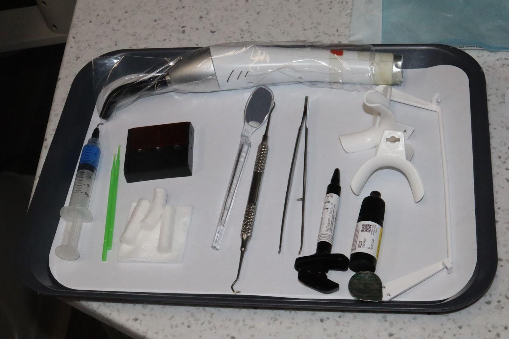
ReferenceThe set tray.
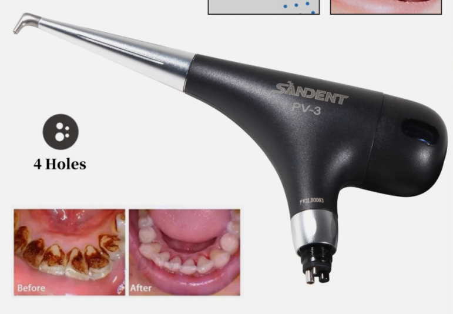
ReferenceMixing well.
What you need on the tray:
Mirror
Scaler and cotton pliers
Pumice paste
Retractors
UV curing light
Mixing well
Microbrushes
Cotton rolls
2x2 gauze
Etch, Assure Plus, and Band-Lok band cement
Not shown in the photo
Two things are missing from the picture and still need to be on the tray: the sand conditioner and the indirect bonding trays themselves.
The prepared trays
The trays are prepared ahead of time in airtight, blackout containers. The adhesive is already placed on each bracket base with a PFI and is ready to go, which is why the trays stay in the blackout boxes until the moment you place them.
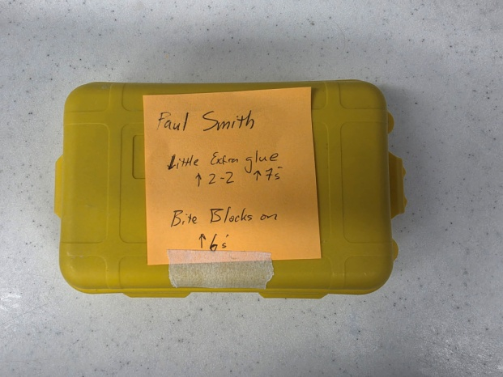
ReferenceTrays are prepared in these airtight, blackout containers, glue already placed and ready.
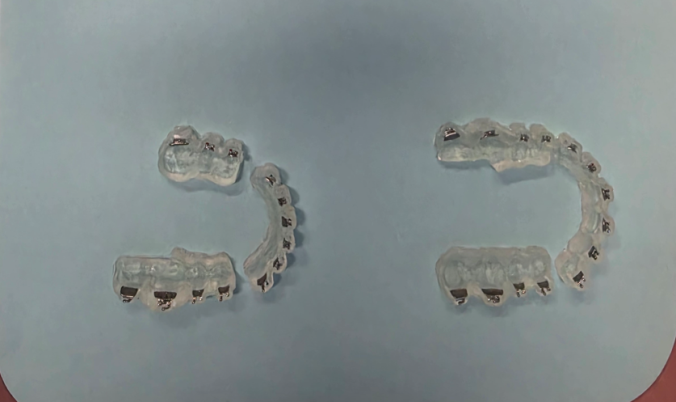
StepPlace the bracket trays on the tray.
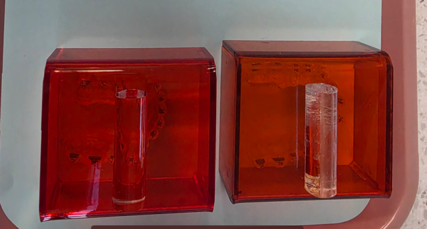
StepImmediately cover them with the blue light-filter boxes, as shown. The doctor is ready to check them before bonding.
Protect the adhesive from light
The glue is light-cured. Keep each tray under its blue light-filter box until the second you seat it, or the adhesive will start to set in the tray and the brackets will not bond cleanly.
Doctor check before you start
Before bonding, the doctor confirms that every bracket is completely engaged in its slot in the indirect bonding trays. Do not begin until that check is done.
Section 2Anterior teeth, step by step
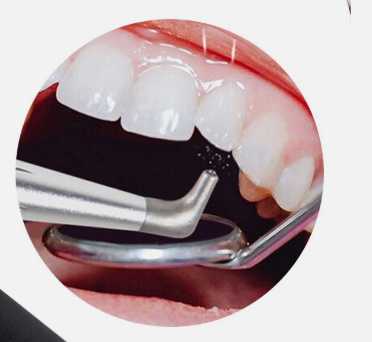
Step 1Prophy every single tooth with pumice paste.
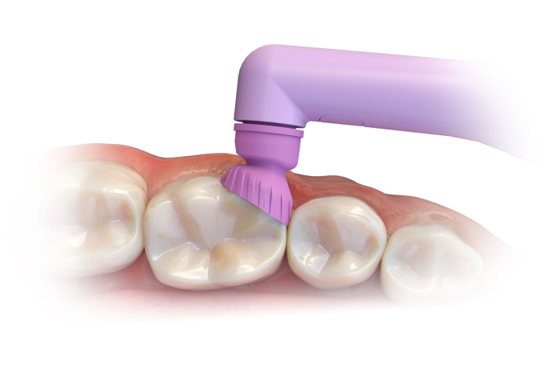
Step 2Sand condition all 7s and the occlusal surfaces where the bite blocks will go.
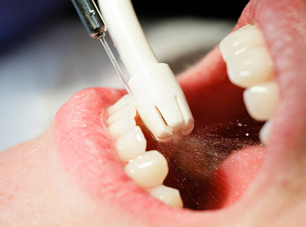
Step 3Rinse until all the prophy paste is gone.
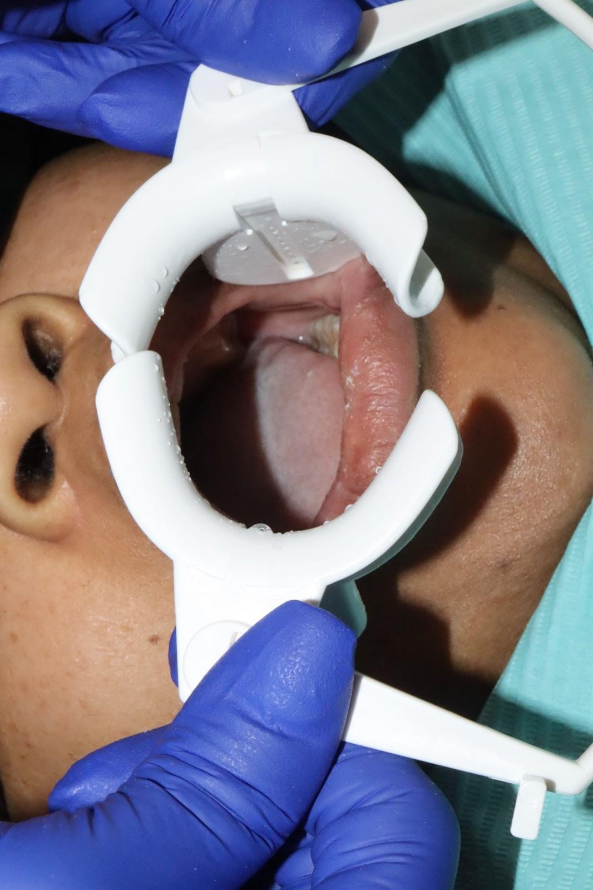
Step 4Apply the cheek retractors.
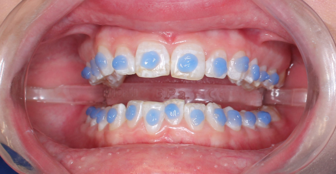
Step 5Etch every tooth where a bracket will go.
Etch and soft tissue
Do not leave etch sitting on the soft tissue. Prolonged contact can cause a chemical burn. Keep it on the enamel only.
Step 6Rinse all the etch off. Use high-speed suction to clear the larger globs so none sits on the soft tissue.
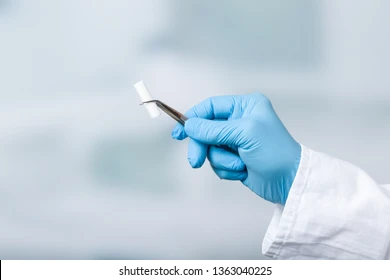
Step 7Dry the area where you will start and place a cotton roll underneath the lip.
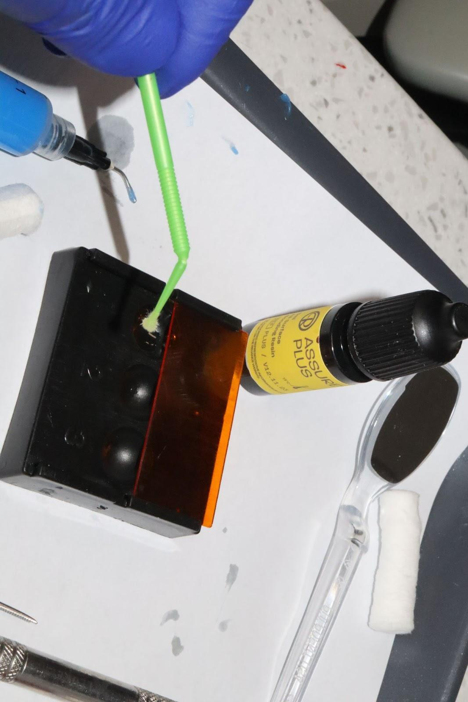
Step 8Apply Assure Plus to the designated teeth.
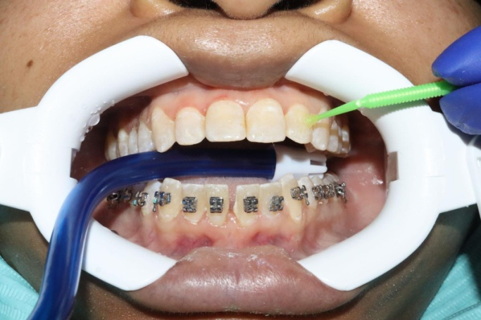
Step 9After applying Assure Plus, apply a little air so the primer spreads evenly across the tooth.Step 10Grab the bracket tray from underneath the UV light blocker. Make sure the area is completely isolated. If needed, put a cotton roll in the lower anterior vestibule so the lower lip cannot contaminate the lower anterior teeth.
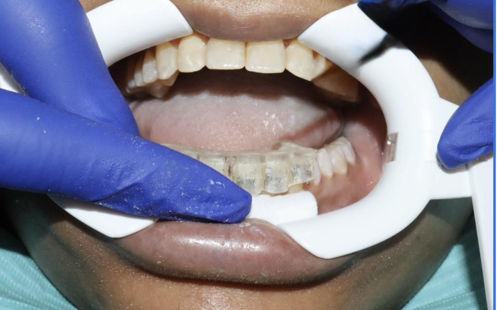
Step 11Place the tray right on top of the teeth and press down on each bracket. The trays are molded to size, so they should seat in just one position.
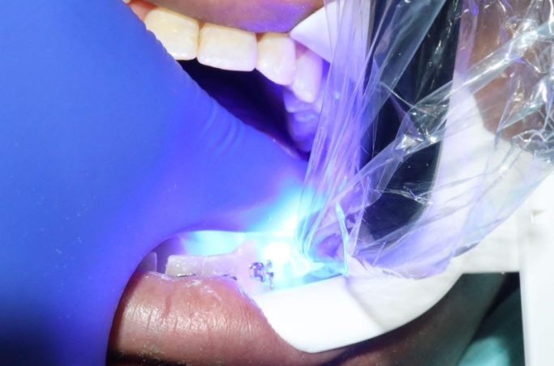
Step 12Cure each tooth from the top and from the sides of the tray.
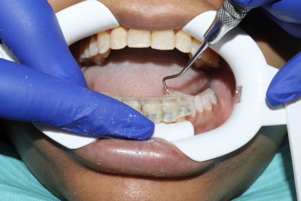
Step 13With a scaler, start to peel the tray, either from the back or from the sides.
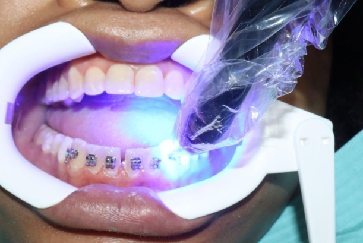
Step 14After the tray is off, cure one more time.
Section 3Posterior teeth, step by step
Step 1Etch the teeth where the brackets will be placed.Step 2Rinse the etch.
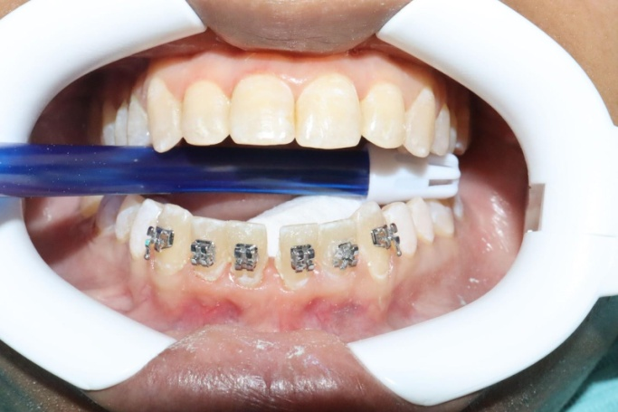
Step 3Place a cotton roll underneath the tongue and position suction right between the teeth on top of the cotton roll to keep good isolation. Watch the cheek side for isolation too.
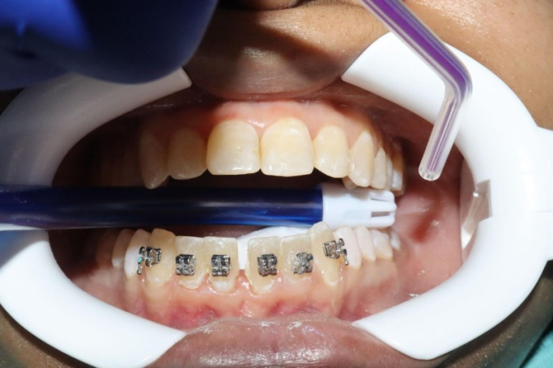
Step 4Dry until all the teeth are white and chalky.
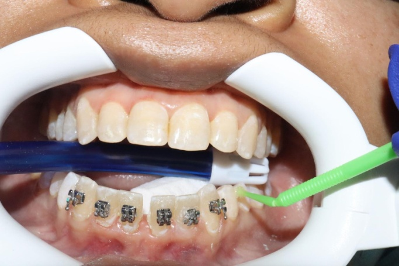
Step 5Once all teeth are dry, apply Assure Plus.
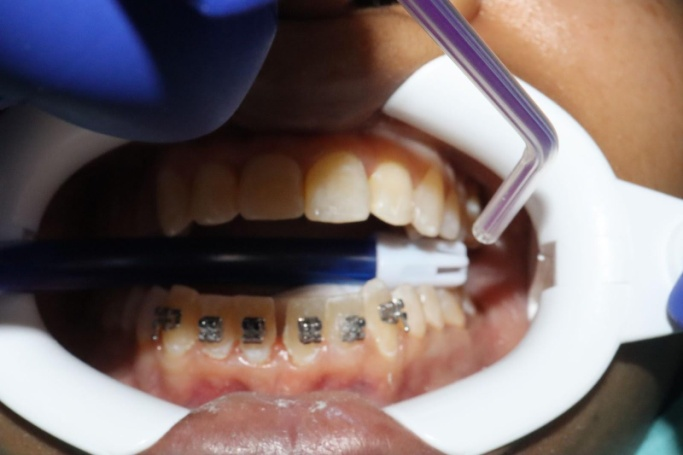
Step 6Blow air on the teeth where Assure Plus was added so it spreads across the tooth.
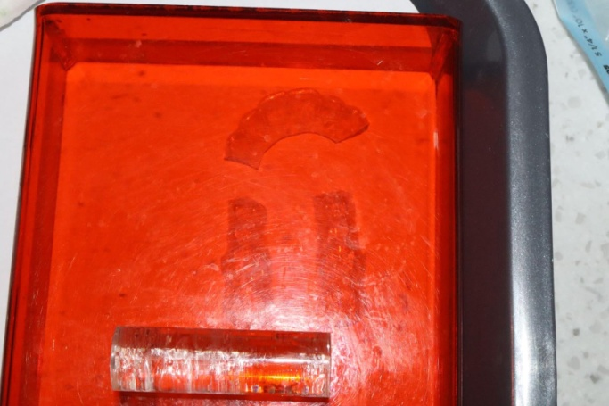
Step 7Grab the tray from underneath the UV light box.
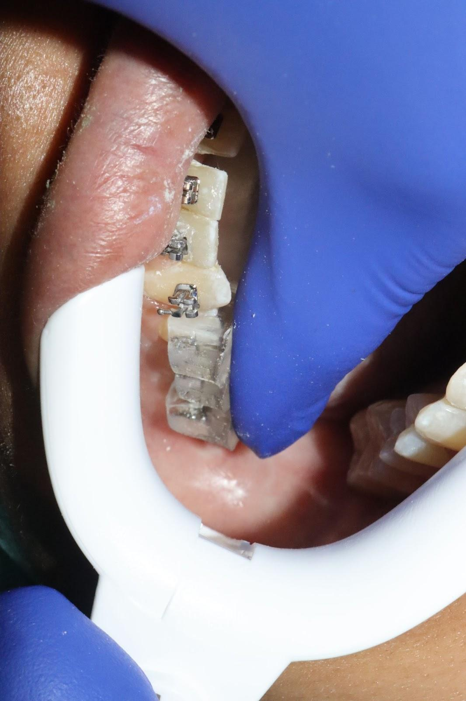
Step 8Place the tray right on top of the teeth.
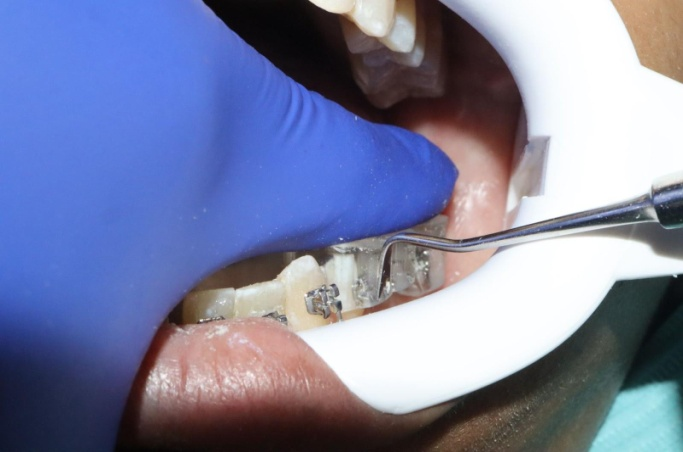
Step 9Apply pressure on the brackets: firm enough that they stick, but not so hard that they come out of the tray slots.Step 10Cure each tooth from the top and from the sides.
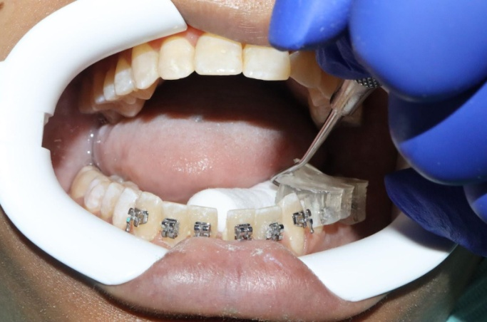
Step 11Peel the tray from the lingual side.
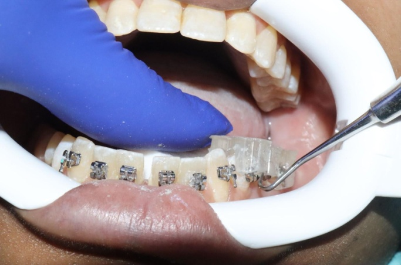
Step 12You can also peel from the buccal side.
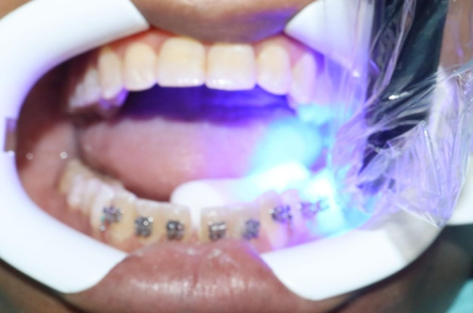
Step 13After peeling the tray, go ahead and cure again without the tray.
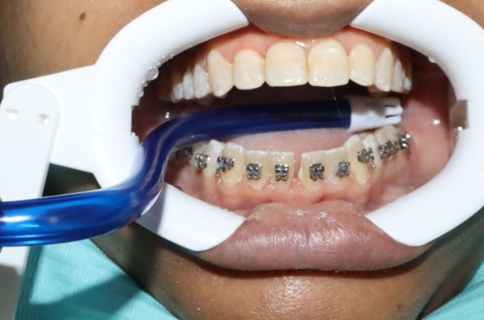
Step 14Now do the other side the same way.
Section 4Bite blocks
Before removing the retractors, check whether the patient needs bite blocks. If the setup called for them, there will be a post-it note on the blackout container that held the trays. Check regardless of the note.
If the patient says they are biting on the brackets, add bite blocks.
If a bracket looks like it is touching the opposing occlusion, place bite blocks.
Bite blocks usually go on the upper 6s unless the doctor indicates otherwise. Before placing a bite block, prepare the surface the same way you prepared the teeth:
Sand condition the occlusal surface of the tooth you are bonding.
Etch that surface.
Prime with Assure Plus.
Place the Band-Lok band cement (blue glue), then seat and cure the block.
WatchBite blocks: when they are needed and how to place them.
Section 5Writing a complete initial bonding note
WatchWriting a complete initial bonding note.
Placing the brackets is only half the appointment. The note is how the next tech, the doctor, and the front desk know what was actually done. A complete initial bonding entry documents:
The patient's treatment plan
That today's procedure was an initial bonding
The technician and the correct treating doctor
Which arches were bonded
The bracket type and the extent, such as 7-7
Whether the brackets were placed by IDB or direct bonding
Whether bite blocks were placed
The actual brackets shown in the tooth chart
The upper and lower starting wires
The next-visit interval and the planned next wire
The GPS note
Training rule
The treatment card, the tooth chart, and the patient's mouth should all match. Do not simply accept the template and move on. Document what was actually done today.
PLAN→BOND→CHART→WIRES→NEXT VISIT
1. Make sure the treatment plan is available
Before writing the note, review the patient's treatment plan and copy it into the Treatment Plan area so it stays visible throughout treatment. Use the date-entry function so there is a record of when it was entered or changed.
Treatment plan, from the video24 Month Braces, Nonextraction. 1. Clearance. 2. Bond upper and lower brackets. 3. Level COS. 4. Alignment. 5. Debond. 6. Retainer.
If the doctor changed the plan
The chart must reflect the current treatment plan, not an outdated version.
2. Create today's treatment card entry
Create a new entry for the bonding appointment. Enter Procedure: IB, your initials or name as the technician, and the correct treating doctor.
Always verify the treating doctor
The doctor in the treatment card must match the doctor responsible for the patient that day.
3. Select the Braces IB note template
From the Quick Treatment Card Note menu, select Braces IB. This loads the initial bonding template:
Braces IB templateInitial Bonding: Prophy, etched, and bonded all teeth. Light cured brackets. Arch: U (Bracket Type): L (Bracket Type): IDB or DB: Bite Blocks (Y/N): Update Tooth Chart
Do not leave the template incomplete.
4. Document which brackets were actually bonded
Record the bracket type and the teeth bonded.
ExampleU (Bracket Type): Traditional brackets 7-7 L (Bracket Type): Traditional brackets 7-7
This tells the next person that both arches were bonded with traditional brackets through the second molars. If the bonding was different, document the difference, for example "L: Traditional brackets 6-6" or "L: Not bonded today." Do not write 7-7 just because the template says so if that is not what is in the mouth.
5. Document IDB versus direct bonding
Complete IDB or DB. For an indirect bonding appointment, make it clear the brackets were placed with trays: "IDB or DB: IDB." If any brackets had to be directly bonded, document that when it is clinically relevant.
6. Document bite blocks
Complete Bite Blocks (Y/N). In the video it is "Bite Blocks: N." If bite blocks were placed, write Yes and include the location, such as "Y, U6s."
Always check the bite after bonding
If the patient is biting on brackets, bite blocks may be required even if they were not planned. See the Bite Pillows / Bite Blocks lesson.
7. Update the tooth chart
Update the tooth chart so it visually represents what is actually in the mouth. In the video, the traditional upper and lower bracket prescription is added to the chart.
Do not blindly apply a full prescription if the patient has missing teeth, crowns, teeth left unbonded, extraction teeth, partially erupted teeth, different bracket types, or any other plan modification. Modify the chart to match.
The tooth chart is not decorative
Another tech should be able to look at it and immediately know which teeth have brackets and which do not.
8. Enter the starting archwires
Update both wire columns with the actual wires placed, not the wires you expected. In the video: AWU .014 NiTi, AWL .014 NiTi. If upper and lower differ, document them separately, for example AWU 14 NT, AWL 12 NT.
9. Enter the next-visit interval
Complete the WKS column, for example 6 weeks. Do not leave the interval blank.
10. Enter the next-visit wire or objective
The NV column tells the next tech what is planned. In the video: "NV: U/L 16 NT," meaning upper 16 NT and lower 16 NT next time.
The NV column should give direction
The next tech should not have to guess the planned next step. If the doctor gives a more specific instruction, document that instead.
11. Complete the GPS note
Before finishing, make sure a GPS note has been entered with the patient-specific information needed for continuity. Do not complete the chart and forget the GPS note.
Example of a complete initial bonding note
Complete noteINITIAL BONDING. Prophy, etched, and bonded all teeth. Light cured brackets. Arch: U/L U Bracket Type: Traditional brackets 7-7 L Bracket Type: Traditional brackets 7-7 IDB or DB: IDB Bite Blocks: N Tooth Chart: Updated AWU: .014 NiTi AWL: .014 NiTi Return: 6 weeks NV: U/L 16 NT GPS Note: ______
If something was different, write it down
A template is a starting point, not the finished note. When the appointment differs, the note must match what happened:
Modified noteMODIFIED INITIAL BONDING. Prophy, etched, and bonded teeth with IDB trays. U: Traditional brackets 7-7 L: Traditional brackets 6-6 IDB or DB: IDB Bite Blocks: Y, U6s LL7 and LR7: Not bonded today Tooth Chart: Updated to match brackets actually present AWU: 14 NT AWL: 12 NT Return: 6 weeks NV: Evaluate rotations, anticipated U/L 16 NT GPS Note: ______
Initial bonding note checklist
Before you close the note, ask four questions
1. What did we bond today? Which arches, which teeth, what bracket type. 2. Is the tooth chart accurate? Does it match the mouth. 3. What did we place today? Upper wire, lower wire, and bite blocks if any. 4. What happens next? Return interval, planned next wire or objective, and GPS note complete. If another tech has to guess what was bonded or what happens next, the note is incomplete.
Lesson check-off
Lesson sign-off
Bond a full case under supervision. The bar is a clean, dry field, trays seated in one position, and no bracket failures on the recheck.